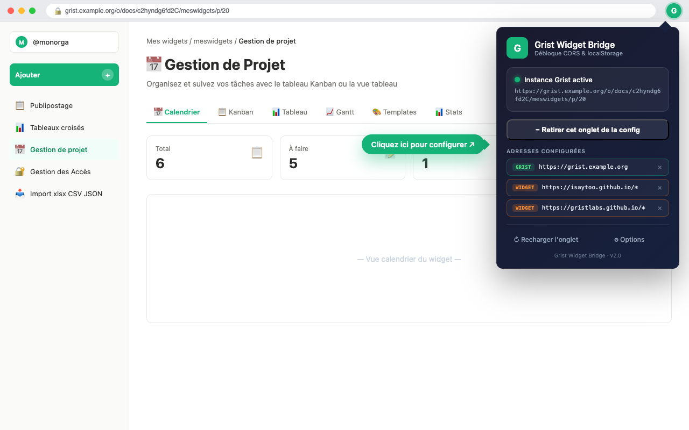
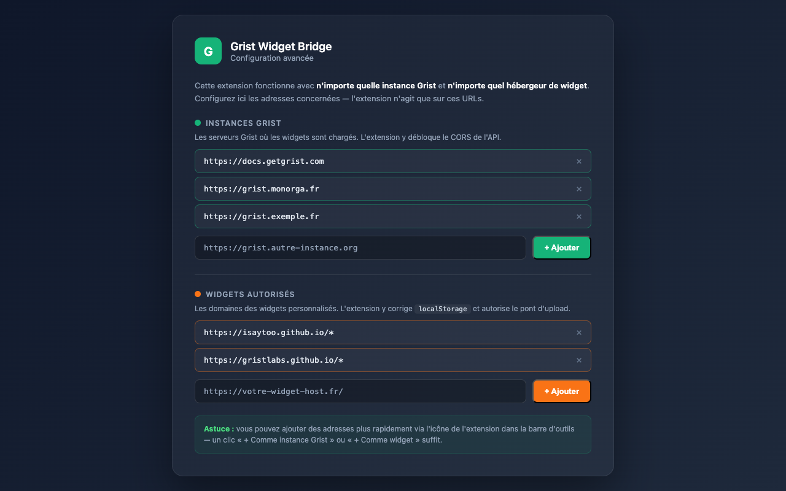

Vos widgets Grist, enfin au complet
Un widget personnalisé est servi depuis un autre site que votre instance Grist. Le navigateur lui retire alors trois capacités : joindre un fichier, interroger l'API, et conserver des réglages. Cette extension les rétablit — sans clé d'API, sans serveur, et sans toucher à la sécurité de Grist.

Ce que l'extension rétablit
Trois blocages, trois réponses — et rien d'autre.
Envoi de pièces jointes
Derrière un portail d'authentification, la requête d'un widget part sans la session de l'utilisateur et se fait refuser. L'extension confie le fichier à la page Grist ouverte, qui l'envoie avec cette session — exactement comme un dépôt fait à la main.
Accès à l'API Grist
Les en-têtes CORS manquants sont ajoutés sur l'API des instances que vous avez déclarées, et uniquement sur celles-ci. Partout ailleurs, l'extension reste inerte.
Stockage local
Quand le navigateur interdit localStorage à un widget, l'extension lui en
fournit un équivalent, conservé sur votre poste et jamais transmis.
Comment ça marche
L'extension injecte un relais dans la page Grist elle-même. Les requêtes partent donc de la même origine que l'API : plus de blocage, et aucun jeton à gérer.
Installation et réglage
- Installez l'extension depuis le Chrome Web Store ou les modules complémentaires de Firefox.
- Sur une page de votre instance Grist, ouvrez l'extension et cliquez sur « + Comme instance Grist ».
- Sur la page de votre widget, cliquez sur « + Comme widget ».
- Rechargez l'onglet Grist. C'est terminé.
Version « Métropole de Lyon » — elle arrive préconfigurée pour
grist.grandlyon.fr et pour l'hébergeur des widgets de la Métropole :
il n'y a rien à régler.

Ce qu'elle ne fait pas
Aucune collecte
Pas de serveur, pas de mesure d'audience, pas de traceur. Rien n'est envoyé à l'éditeur de l'extension.
Aucune clé à confier
L'authentification se fait avec votre session Grist déjà ouverte. Aucune clé d'API n'est créée ni conservée.
Aucune action hors de vos adresses
L'extension n'agit que sur les adresses que vous avez vous-même déclarées. Ailleurs, elle ne fait rien.
Le détail figure dans la politique de confidentialité, et le code est entièrement consultable.